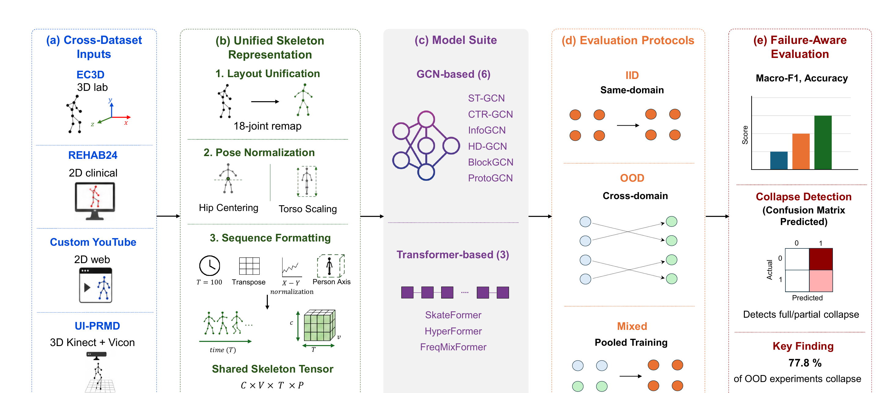
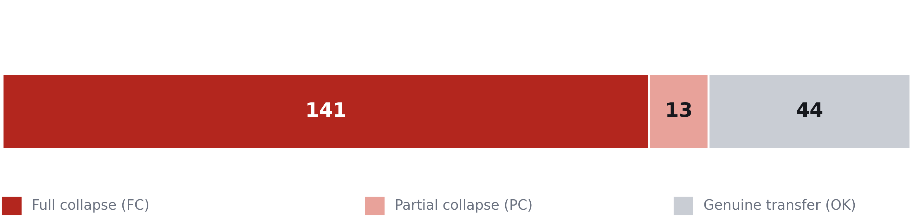
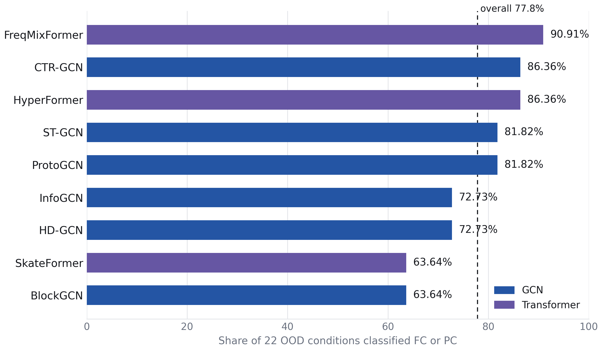
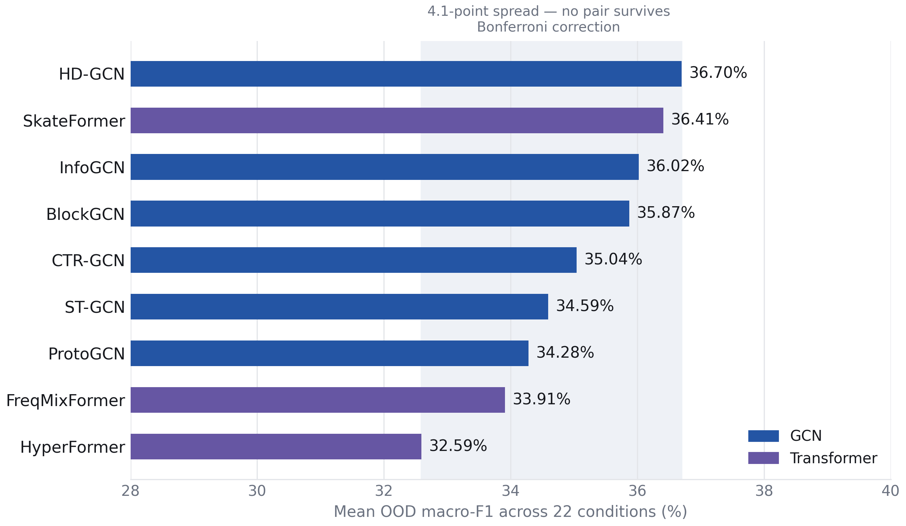

Benchmark Study · Cross-Domain Failure Analysis
1University of Ottawa 2Queen’s University
Abstract
Skeleton-based models for exercise quality assessment score well when trained and tested on the same recording setup, but it is unclear whether they hold up once deployment moves across laboratory, clinical, motion-capture, and web-video domains. We benchmark this question directly: 4 exercise datasets, 9 skeleton-based models spanning GCN and transformer architectures, and 198 out-of-distribution transfer experiments. The result is that 154 of 198 OOD experiments (77.8%) exhibit full or partial classifier collapse — the model settles on one class almost regardless of input, a failure that overall accuracy and macro-F1 do not reveal on their own.
Overview

Four datasets — EC3D, REHAB24, Custom YouTube, and UI-PRMD — are unified under one 18-joint preprocessing protocol, evaluated across nine skeleton models, and scored with a failure-aware protocol that inspects per-class prediction counts rather than aggregate accuracy alone.
Main Result
154 of 198 OOD transfer experiments exhibit full or partial classifier collapse.

A model can report a non-zero F1 score while effectively predicting almost every sample as the same class.
Architecture Comparison

Mean OOD macro-F1 clusters tightly across all nine models — 32.6% to 36.7%. Only 1 of 36 pairwise comparisons is significant before correction, and none remain significant after Bonferroni correction.

Architecture family alone does not reliably predict cross-domain robustness.
Pooled Training
Mixed D1 pools data from all four domains before splitting into train / val / test, so it should not be read as generalization to an unseen domain — it shows the task is learnable given broad coverage, not that transfer to a truly novel recording environment is solved.
Citation
@inproceedings{vahdati2026skeleton,
author = {Monica Vahdati and
Kamran Gholizadeh HamlAbadi and
Ali Etemad and
Abdulmotaleb El Saddik},
title = {Skeleton-Based Exercise Quality Assessment Under Domain Shift:
A Benchmark Study of Cross-Domain Failure Modes},
booktitle = {The 3rd International Workshop on Multimedia Computing for Health and Medicine},
series = {MCHM '26},
year = {2026},
location = {Rio de Janeiro, Brazil},
publisher = {Association for Computing Machinery},
isbn = {979-8-4007-2925-6/2026/11},
doi = {10.1145/3840471.3842592}
}